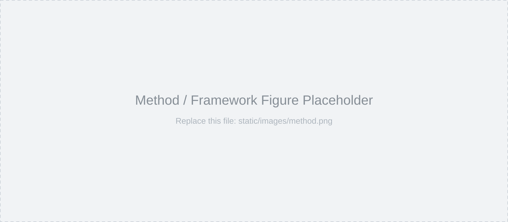

This work is under double-blind review; author information is withheld.
High-fidelity street scene reconstruction is pivotal for end-to-end autonomous driving simulation, where novel-view synthesis (NVS) and time-varying information modeling are the two key elements of 4D reconstruction tasks. However, existing methods fail to simultaneously achieve both. To bridge this gap, we establish an information-geometric diagnostic framework, revealing that this limitation stems from a credit assignment dilemma between spatial and temporal parameters. Specifically, the deterministic coupling between viewpoint and time in single-source observation creates a low-rank structure that induces massive null-space ambiguity between static view-dependent and dynamic time-varying components. Temporal information overshadows spatial cues, causing the estimation variance of spatial parameters to diverge. To address this issue, we propose Orthogonal Projected Gradient (OPG), a hierarchical training method designed to restore spatial identifiability. OPG prioritizes the integrity of spatial representations by securing them in an initial stage, then restricts temporal updates to the spatial null space, enabling proactive credit assignment. While OPG isolates temporal updates algebraically, a Temporal Regularization Strategy is proposed to further refine the temporal solution space by imposing a smoothness constraint based on the physical prior of consistent appearance evolution. Experiments demonstrate that our method maintains stable NVS capabilities while modeling time-varying information.

NVS example
NVS example
Dynamic reconstruction example
Dynamic reconstruction example
@article{anonymous2025towards,
title = {Towards Physically Consistent 4D Scene Reconstruction for Driving Simulation},
author = {Anonymous},
journal = {Under review},
year = {2025}
}